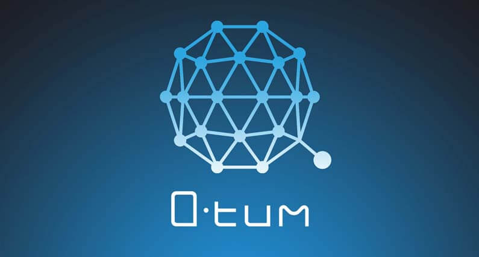
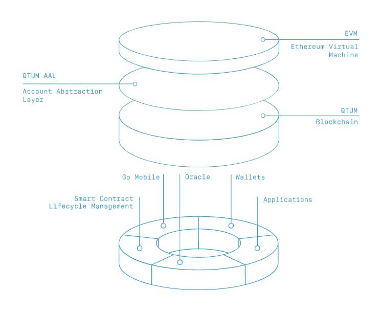

Mi az a QTUM? Útmutató kezdőknek
QTUM (kiejtése Kvantum) egy nyílt forráskódú érték átviteli platform amelynek fókuszpontja a mobil decentralizált applikációk (Dapp). QTUM ötvözni szeretné Bitcoin és Ethereum funkcióit. Bitcoin mint fizető eszköz program és Ethereum amely elsősorban okos szerződések platformja. QTUM ezeknek a hibrid keveréke, egy érték átviteli platform amely Dapp-ok és okos szerződések futtatására is alkalmas.
QTUM eszközöket, sablonokat és Plug and Play okos szerződés opciókat hoz létre, hogy könnyebbé tegye a vállalkozásoknak az okos szerződések létrehozását és futtatását.
QTUM alap elképzelése, hogy az okos szerződéseket egyszerűbbé és biztonságosabbá tegye, miközben kölcsönös átjárhatóságot biztosít más vezető kriptovalutákkal, mint Bitcoin és Ethereum. QTUM kódjának alapja a Bitcoin blokklánc, de a fejlesztők létrehoztak egy réteget amely lehetővé teszi, hogy az Ethereum okos szerződéseiért felelős Ethereum virtuális számítógép futhasson a Bitcoin blokkláncon. Ennek eredménye, hogy mind Bitcoin mind Ethereum új fejlesztéseit alkalmazhatja, és az Ethereum-ra épített okos szerződések könnyen átrakhatók QTUM-ra.
Bitcoin és Ethereum egyesítése
Bitcoin főkönyve egy úgynevezett UTXO (Unspent Transaction Output) modellt használ. Ez azt jelenti, hogy minden tranzakció a Bitcoin blokkláncon egy hivatkozás az előző tranzakcióra. A Bitcoin blokklánc nem követi nyomon a számlák egyenlegeit, csak a tranzakciókat kíséri figyelemmel. A számla egyenlegét a régi tranzakciók visszakövetéséből építi fel, és erre hivatkozva kezdeményez új utalásokat.
Ethereum ezzel szemben sokkal inkább egy hagyományos banki főkönyv szerint működik. Itt minden számlának megvan a maga egyenlege. Minden Ether tranzakció után a számlaegyenleg frissítésre kerül a globális főkönyvben. Ezt a számla egyenleg alapú megközelítést sokkal könnyebb megérteni ami segít a fejlesztőknek, és helymegtakarításhoz is vezethet. Ugyancsak jobban működik az okos szerződések esetében amelyeknek komplex logikáit nem lehetne felépíteni Bitcoin rendszerében.
QTUM egy olyan kriptovaluta és okos szerződés platform amely ötvözi Bitcoin és Ethereum legjobb tulajdonságait. Mindezt rétegelt megközelítéssel, ahol a tranzakciókat egy módosított Bitcoin réteg kezeli és az okos szerződések az Ethereum virtuális számítógépen futnak. Középen a két technológia összehangolását pedig az úgynevezett Account Abstraction Layer kezeli.
Az egyik fő motivációja ennek a megközelítésnek, hogy egy olyan blokkláncot hozzanak létre amely lehetővé teszi az okos szerződések végrehajtását mobil klienseken. Ez nem kivitelezhető Ethereum számlavezetési módszerével, azonban Bitcoin rendszere tökéletes erre. Mobil kliensek kapcsolódhatnak a blokklánchoz és végrehajthatnak okos szerződéseket QTUM virtuális számítógépe segítségével.
Még egy előnye Bitcoin és Ethereum technológiák összeolvasztásának, hogy megnöveli a bővíthetőséget. Ethereum 15 tranzakciót képes kezelni, QTUM tesztelve volt más 60 tranzakció/másodperccel is. Jordan Earls, QTUM vezető fejlesztője elmondása szerint a további bővíthetőség érdekében vagy rétegelt hálózatot alakít ki (mint Ethereum Sharding megoldása, Cardano) vagy blokkláncon kívüli megoldást vezet be (Enigma).
QTUM Proof of Stake megegyezési algoritmust használ, amelyet Ethereum is be fog vezetni a jövőben.
Blokklánc a mobilon
Nagy akadály okos szerződés alapú dapp-ok elterjedésénél, hogy light kliensek nem tudják azokat kezelni. A light kliens egy olyan blokklánc hálózati csomópont (node) amely nem tárolja a blokklánc teljes történetét. Ehelyett minden belépésnél csak a legfrissebb blokkokat tölti le, és eszerint ellenőrzi a tranzakciókat.
Hagyományosan light kliensek nem támogatják az okos szerződések kezelését. Okos szerződés létrehozásához, telepítéséhez vagy megváltoztatásához teljes klienst kellett futtatni a hálózaton. Tehát lassú kapcsolat, kevés tárhely vagy mobil telefon esetében okos szerződések nem elérhetőek.
QTUM ezt szeretné megváltoztatni és lehetővé tenni okos szerződések kezelését mobil telefonokról. Ez azért lehetséges, mert QTUM olyan UTXO technológiát használ, amely lehetővé teszi az egyszerű fizetési ellenőrzést (SPV). Ez az egyszerű fizetési ellenőrzés lehetővé teszi a light klienseknek, hogy megerősítsenek tranzakciókat teljes kliens futtatása nélkül. Néhány érintéssel kezelhetnénk az okos szerződéseket a mobilunkról, elérhetővé téve a lenyűgöző blokklánc technológiát a mobil alkalmazások világában.
QTUM készlet
QTUM 51 millió érmét adott el 2017 Márciusában az ICO keretein belül, a teljes készlet 100 millió QTUM. A többi 49 millió érmét elosztották az alapítók és fejlesztők között, valamint közösségi célokra is félreraktak.
QTUM blokkjutalmai mindig új QTUM érmék, ez azt jelenti, hogy a teljes QTUM készlet folyamatosan növekszik.
QTUM vásárlás és tárolás
Legegyszerűbb módja ha először Bitcoin-t vagy Ethereum-ot vásárolsz Coinbase vagy BitPanda-án. Ezután többek között Binance vagy Bitfinex segítségével cserélheted Bitcoin-t QTUM-ra. Bitcoin vagy Ethereum beszerzése után Binance és Bitfinex oldalon részletes útmutatót találsz kriptopénz vásárlással kapcsolatban.
Létezik QTUM tárca Windows, Linux és OSX-re is. Hivatalos weboldalon minden megtalálható, valamint mobil tárca is készülőben van. Ledger Nano S ugyancsak támogatja QTUM-ot ha valaki hardver tárcán szeretné tárolni QTUM-ot.
Záró gondolatok
QTUM egy innovatív platform rengeteg potenciális ügyfél elérésére. Decentralizált mobil alkalmazások megvalósítása, és a világ első PoS okos szerződés platformja előnyt biztosít a versenytársakhoz képest. Bitcoin és Ethereum-al való kompatibilitása és egy tapasztalt fejlesztői csapattal a háttérben QTUM-nak minden lehetősége adott, hogy sikeresek legyenek a jövőben.


2018. Február 13.